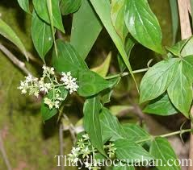

Tên khác
Tên thường gọi: Dạ cẩm, cây loét mồm, đất lượt, đứt lượt, chạ khẩu cắm, ngón lợn, dây ngón cúi.
Tên tiếng Trung: 荞花黄连
Tên khoa học: Hediotis capitellata Wall. ex G.Don,
Họ khoa học: họ Cà phê (Rubiaceae).
Cây dạ cẩm
(Mô tả, hình ảnh cây dạ cẩm, phân bố, thu hái, thành phần hóa học, tác dụng dược lý...)
Mô tả:

Phân bố, thu hái:
Mọc hoang ở vùng núi Miền Bắc Việt Nam. Có nhiều ở các tỉnh như: Lạng Sơn tới Khánh Hoà, Kontum, Lâm Đồng và Đồng Nai.
Mùa thu hái gần như quanh năm, thường hái là và ngọn non, có thể dùng toàn cây bỏ rễ. hái về rửa sạch phơi hay sấy khô, để nơi khô ráo dùng dần hay nấu cao.
Bộ phận dùng:
Phần trên mặt đất - Herba Hedyotidis.
Thành phần hoá học:
Toàn cây chứa alcaloid, tanin, saponin, anthraglycosid. (Hội đông y Lạng Sơn)
Ngoài ra Đại học dược Hà Nội còn tìm thấy hoạt chất anthra-glucozit.
Tác dụng dược lý:
Năm 1962, lần đầu tiên bệnh viện Lạng Sơn đưa cây dạ cẩm vào điều trị bệnh đau dạ dày, xuất phát từ kinh nghiệm nhân dân dùng cây này chống loét rất tốt.
Qua nghiên cứu lâm sàng cho thấy, cây dạ cẩm có tác dụng giảm đau, trung hòa axit trong dạ dày, bớt ợ chua, vết loét se lại.
Vị thuốc dạ cẩm
(Công dụng, liều dùng, tính vị, quy kinh...)
Tính vị:
Vị ngọt, hơi đắng, tình bình
Tác dụng:
Thanh nhiệt, giải độc, làm dịu cơn đau, tiêu viêm, lợi tiểu.
Công dụng:
Chữa viêm loét dạ dày, đau dạ dày, chữa lở miệng, viêm họng
Cách dùng, liều dùng:
Dùng chế thành dạng cao lỏng: Người ta dùng lá Dạ cẩm khô 7kg, đường kính 2kg, mật ong 1kg. Nấu lá Dạ cẩm với nước thành 8kg cao, cho vào 2kg đường và đánh tan còn 9kg, cuối cùng thêm 1kg mật ong. Cao có màu nâu đen, vị hơi đắng và có mùi lá cây. Đóng thành chai 250ml. Ngày uống 2-3 lần, trước khi ăn hoặc khi đau, mỗi lẫn 1 thìa to.
Dùng chế thành dạng cốm: Bột lá khô Dạ cẩm 7kg, Cam thảo 1kg, đường kính 2kg, hồ nếp viên đủ làm thành cốm. Ngày uống 2 lần trước bữa ăn hoặc khi đang đau, mỗi lần 10-15g, trẻ em dưới 15 tuổi: 5-10g. Ngoài việc dùng chữa loét dạ dày, Dạ cẩm còn được dùng chữa loét miệng lưỡi và chữa các vết thương. Cũng dùng phối hợp với các vị thuốc khác như Cỏ bạc đầu, lá Răng cưa, giã đắp trị đau mắt; hoặc phối hợp với vỏ Đỗ trọng nam chữa bong gân.
Dùng dưới dạng thuốc sắc từ thân và lá phơi khô. Ngày từ 10-25 lá, uống trước khi ăn hay vào lúc đau
Tác dụng chữa bệnh của vị thuốc dạ cẩm
Chữa loét dạ dày, ợ chua:
Dùng 20-40g Dạ cẩm, dạng thuốc sắc thuốc hãm, bột hay cao, chia 2 lần uống lúc bị đau hoặc trước bữa ăn.
Chữa lở loét miệng lưỡi:
Dùng cao lỏng Dạ cẩm trộn với mật ong, bôi hàng ngày.
Chữa vết thương, làm chóng lên da non:
Dùng lá Dạ cẩm tươi giã đắp.
Tham khảo
Phân loại dạ cẩm
Trên thực tế hiện nay người ta dùng 4 loại cây dạ cẩm, có thể là các dạng của loai mô tả trên: Cây dạ cẩm thân tím và cây dạ cẩm thân xanh (có khi gọi là thân trắng); mỗi loai lại thấy có 2 loại: loại nhiều lông nhìn rõ và loại ít lông trông không rõ. Loại thân tím có đốt cách thưa nhau, loại thân xanh hay trắng có đốt mọc sít nhau hơn
Nơi mua bán vị thuốc Dạ cẩm đạt chất lượng ở đâu?
Trước thực trạng thuốc đông dược kém chất lượng, nguồn gốc không rõ ràng,... xuất hiện tràn lan trên thị trường, làm ảnh hưởng tới hiệu quả điều trị cũng như ảnh hưởng tới sức khỏe của bệnh nhân. Việc lựa chọn những địa chỉ uy tín để mua thuốc đông dược là rất quan trọng và cần thiết. Vậy khách hàng có thể mua vị thuốc Dạ cẩm ở đâu?
Dạ cẩm là vị thuốc nam quý, được sử dụng rộng rãi trong YHCT. Hiện tại hầu hết các cửa hàng thuốc đông dược, phòng khám đông y, phòng chẩn trị YHCT... đều có bán vị thuốc này. Tuy nhiên người mua nên chọn những địa chỉ có uy tín, đảm bảo chất lượng, có giấy phép hoạt động để mua được vị thuốc đạt chất lượng.
Với mong muốn bệnh nhân được sử dụng những loại dược liệu đúng, chất lượng tốt, phòng khám Đông y Nguyễn Hữu Toàn không chỉ là đia chỉ khám chữa bệnh tin cậy, uy tín chất lượng mà còn cung cấp cho khách hàng những vị thuốc đông y (thuốc nam, thuốc bắc) đúng, chuẩn, đạt chuẩn chất lượng. Các vị thuốc có trong tiêu chuẩn Dược điển Việt Nam đều được nghành y tế kiểm nghiệm đạt chất lượng tiêu chuẩn.
Vị thuốc Dạ cẩm được bán tại Phòng khám là thuốc đã được bào chế theo Tiêu chuẩn NHT.
Giá bán vị thuốc Dạ cẩm tại Phòng khám Đông y Nguyễn Hữu Toàn: Gọi 18006834 để biết chi tiết
Tùy theo thời điểm giá bán có thể thay đổi.
+ Khách hàng có thể mua trực tiếp tại địa chỉ phòng khám: Cơ sở 1: Số 481 lô 22 Lê Hồng Phong, Phường Gia Viên, Thành phố Hải Phòng
+ Mua trực tuyến: Thuốc được chuyển qua đường bưu điện. Khi nhận được thuốc khách hàng thanh toán tiền COD.
Tag: cay da cam, vi thuoc da cam, cong dung da cam, Hinh anh cay da cam, Tac dung da cam, Thuoc nam
Thaythuoccuaban.com Tổng hợp
*************************